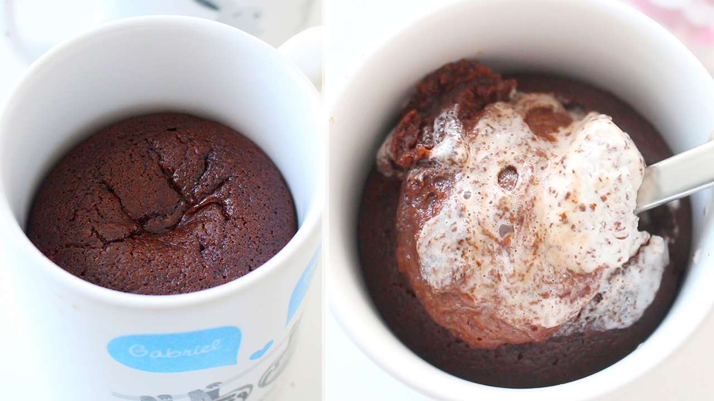

Nerida Akulionytė
Apie
"Viskas kas rūpi"
Mėgstamiausias receptas!
2019/01/14
Šitame įraše rasite mano visų laikų mėgstamiausią receptą! Jis pavadintas puodelio lavos tortu. Patikėkite manimi- tortas labai skanus!

Top 10 mėgstamiausių dainų!
2019/01/10
Praklausiau visą "Youtube" puslapį ir pamąsčiau, kad reikia man sukurti savo mylimiausių dainų top 10 ! Šitame straipsnyje rasite ir dainų, kurios privers šokti bei tų, kurios tiks ir liūdnai nuotaikai.